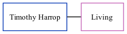

Timothy Harrop, the husband of Yvonne Rosemary Vears (the second cousin on the mother's side of Nigel Horne), and married Yvonne in Dover, Kent, England around Aug 19951.
Citations
England & Wales Marriages 1837-2005 - Findmypast
Family Tree

Generated by ged2site. Last updated on Nov 13, 2024